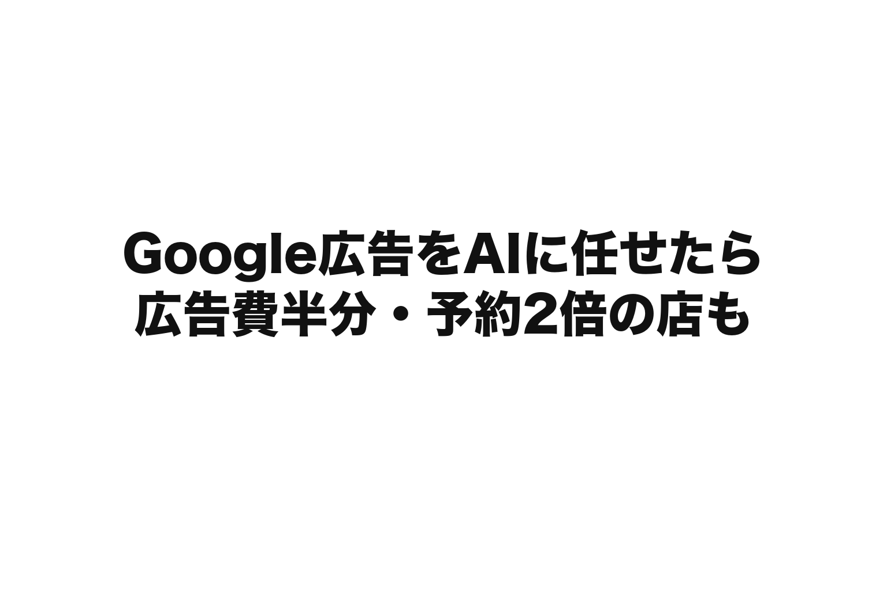

Google広告の運用を、代行に頼まずAIに任せました。
結果は、こうです。
| 結果 | |
|---|---|
| 広告費 | 半分に |
| 予約 | 減らなかった |
| HPからの予約 | 2倍になった店も |
2倍になった店は、広告費を1円も増やしていません。
同じ予算のまま、AIが入札と計測を直しただけです。
キーワード選び、広告文、効果の確認、改善案、設定の変更。
代行の会社がやってくれる仕事は、ほぼ全部AIがやっています。
ぼくがやるのは、AIの案を見て「OK」と言うことだけです。
この記事では、次の3つを書きます。
- AIに任せている7つの仕事
- AIでPDCAを回すやり方
- 失敗しないための注意と、始め方
この記事を書いた人

この記事は、自分のお店のGoogle広告を、AIに運用させてきたきくりんが書いています。
広告費を半分にしても、予約の売上は減りませんでした。
1. 運用代行の仕事は、ほぼAIでできる
運用代行に頼むと、手数料は広告費の20%前後が多いです。
月7万円の広告なら、毎月1万4千円くらいです。
では、代行は何をしてくれるのか。
ざっくり、この7つです。
- 計測の設定(予約や問い合わせを数える)
- キーワード選びと、出さない言葉の設定
- 広告文づくり
- 予算や入札の変更
- 効果の確認(毎週・毎月のレポート)
- 改善の提案
- 方針を決めて、OKを出す
このうち、1〜6はAIに任せています。
7だけが、あなたの仕事です。
2. いまのぼくの広告
いま動いている広告は2本です。
1日2,200円、月にすると7万円くらいです。
最初は、もっと多くの広告を出していました。
AIと一緒に見直して、効いているものだけ残しました。
AIは、広告の画面の数字だけを見ません。
お店の実際の予約と、突き合わせます。
広告の画面では「予約ボタンが押された」と出ます。
でも、本当に予約が入ったかは別です。
ここを見ないと、効いていない広告にお金を払い続けます。
3. AIに任せて変わった3つのこと
① 予約の数え方を直した
AIに点検させたら、予約を数える仕組みの多くが動いていませんでした。
「会社の紹介ページを見ただけ」の人も、予約に数えられていました。
直したら、予約ボタンのクリックが0件から2週間で59件に。
そもそも数えられていなかったのです。
② 広告費が半分になった
数字を見て、効いていない広告を止めました。
広告費は半分くらいになりました。
それでも、お店の予約の売上は減りませんでした。
③ 同じ広告費で、HPからの予約が2倍に
いちばん効いている広告は、予約1件あたり340円くらいでした。
入札を直していくと、200円、150円と下がりました。
1件が安くなれば、同じ予算で取れる予約がふえます。
この店では、広告費は同じまま、HPからの予約が月20件くらいから40件くらいになりました。
4. AIでPDCAを回すやり方
PDCAは、この順番で回しています。
- AIが仮説を立てる(「この広告は、予算より広告文が弱い」)
- AIが設定を変える(広告文・キーワード・予算)
- 決めた日に、AIが自動で結果を集める
- AIが「増やす・止める・そのまま」を数字つきで出す
- あなたが決める
3は、日にちを決めて自動で動かしています。
2週間後、4週間後に、AIが勝手に集計してくれます。
AIは、広告の外の原因まで見てくれます。
例えば、ぼくのお店で予約が減ったとき。
AIは広告ではなく、支払い方法を変えたことが原因だと見つけました。
広告だけを見る人なら、広告のせいにしていたかもしれません。
5. ABテストは「止めて確かめる」
ABテストというと、広告文を2つ出して比べるやり方が有名です。
でも、小さいお店で効くのは、もっと単純なやり方でした。
1つ止めて、予約が減るか見る。
例えば、効き目が見えない広告を、いま4週間止めています。
止めても予約が減らなければ、そのぶんの広告費はいりません。
逆に、いちばん効いている広告は、1日1,200円から1,500円に増やしました。
Googleの見積もりでは、予約ボタンのクリックが週に9件くらい増えます。
どちらも、AIが数字で出した案です。
ぼくは「両方やって」と言っただけです。
うまくいかない広告もあります。
ぼくの場合、クリックはたくさん取れたのに、予約が増えない広告がありました。
AIが「止めましょう」と出して、止めました。
やめどきを数字で教えてくれるのも、AIのいいところです。
6. AIのミスと、防ぎ方
| AIのミス | 防ぎ方 |
|---|---|
| 予算を入れる途中で、勝手に決まった | 変えたあと、合計を見る |
| 800円が800万円になりかけた | 金額は全部消してから入れる |
| 変えた設定が、元に戻っていた | 保存のあと、画面を開き直す |
AIは、まちがえます。
とくにお金の入力は、人の目で一度見てください。
ぼくは、Google広告の画面の操作までAIに任せています。
ただ、どこまで任せるかは、Googleの規約を確かめて、ご自身の責任で決めてください。
画面を触らせたくない人は、AIには案だけ出させて、ボタンは自分で押す形でも十分です。
7. 始め方の3ステップ
- いまの広告の数字と、お店の実際の予約を、AIに見せる
- 「どの広告が効いているか」をAIに判定させる
- AIが出した案から、1つだけやってみる
いきなり全部を任せなくて大丈夫です。
最初は、1つ止めて確かめるだけでも、お金は浮きます。
人に任せたほうがいい人もいます。
数字を見る時間がまったく取れない人や、広告費が大きい人です。
その場合も、代行のレポートをAIに読ませると、話が早くなります。
まとめ
Google広告の運用は、AIに任せられます。
大事なことは、この5つです。
- 代行の7つの仕事のうち、6つはAIができる
- 広告の画面だけでなく、お店の実際の予約と突き合わせる
- PDCAの「確認」は、日にちを決めて自動にする
- ABテストは、まず「1つ止めて確かめる」
- お金の入力は、最後に人の目で見る
あなたがやるのは、AIの案を見て、決めることだけです。
▼ネタの作り方から、AIで教材にまとめて売るまで、やったことを1冊にまとめてあります
フォロワーゼロから2ヶ月で利益101.5万円まで、数字と失敗と手順を全部書いた教科書です。
録音から記事、教材、販売ページ、売れたあとの台帳まで。うちで毎日使っているツールも付録に入れました。
『noteから始める「AI×◯◯」コンテンツ販売の教科書｜フォロワーゼロから2ヶ月で利益101.5万円』


販売価格は3部売れるごとに2,000円ずつ値上がりします（上限あり）。内容・最新価格は販売ページをご確認ください。